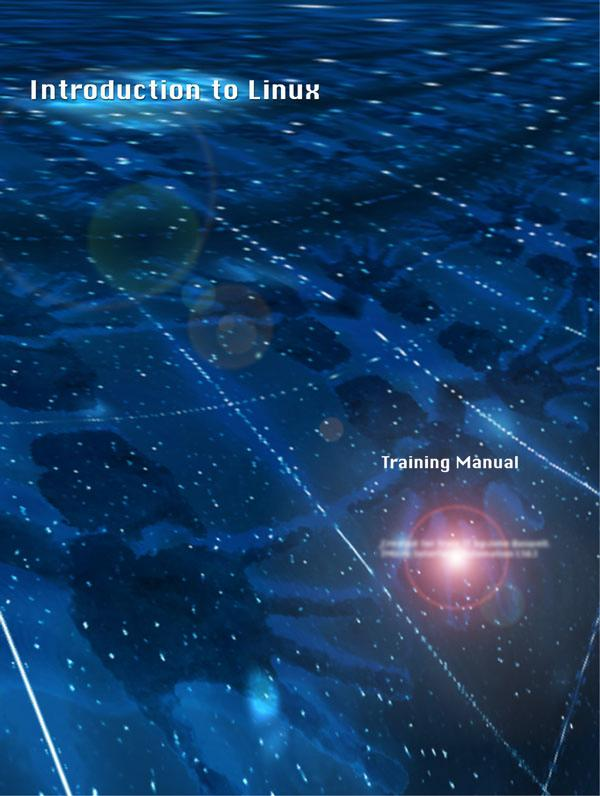

Introduction to Linux
by John Buswell (johnb@one.net)
Revision 1.2, September 1999
Copyright (c) 1999 John I.Buswell.
Linux is a trademark of Linus Torvalds
Red Hat is a trademark of Red Hat Software, Inc.
OpenContent
License (OPL)
Version 1.0, July 14, 1998.
This document outlines the principles underlying the OpenContent (OC)
movement and may be redistributed provided it remains unaltered. For
legal purposes, this document is the license under which OpenContent
is made available for use. The original version of this document may
be found at http://www.opencontent.org/opl.shtml
LICENSE
Terms and Conditions for Copying, Distributing, and Modifying
Items other than copying, distributing, and modifying the
Content with which this license was distributed (such as using, etc.)
are outside the scope of this license.
1. You may copy and
distribute exact replicas of the OpenContent (OC) as you receive it,
in any medium, provided that you conspicuously and appropriately
publish on each copy an appropriate copyright notice and disclaimer
of warranty; keep intact all the notices that refer to this License
and to the absence of any warranty; and give any other recipients of
the OC a copy of this License along with the OC. You may at your
option charge a fee for the media and/or handling involved in
creating a unique copy of the OC for use offline, you may at your
option offer instructional support for the OC in exchange for a fee,
or you may at your option offer warranty in exchange for a fee. You
may not charge a fee for the OC itself. You may not charge a fee for
the sole service of providing access to and/or use of the OC via a
network (e.g. the Internet), whether it be via the world wide web,
FTP, or any other method.
2. You may modify your copy or
copies of the OpenContent or any portion of it, thus forming works
based on the Content, and distribute such modifications or work under
the terms of Section 1 above, provided that you also meet all of
these conditions:
a) You must cause the modified content to
carry prominent notices stating that you changed it, the exact nature
and content of the changes, and the date of any change.
b)
You must cause any work that you distribute or publish, that in whole
or in part contains or is derived from the OC or any part thereof, to
be licensed as a whole at no charge to all third parties under the
terms of this License, unless otherwise permitted under applicable
Fair Use law.
These requirements apply to the modified work
as a whole. If identifiable sections of that work are not derived
from the OC, and can be reasonably considered independent and
separate works in themselves, then this License, and its terms, do
not apply to those sections when you distribute them as separate
works. But when you distribute the same sections as part of a whole
which is a work based on the OC, the distribution of the whole must
be on the terms of this License, whose permissions for other
licensees extend to the entire whole, and thus to each and every part
regardless of who wrote it. Exceptions are made to this requirement
to release modified works free of charge under this license only in
compliance with Fair Use law where applicable.
3. You are not required to accept this License, since you have not signed it. However, nothing else grants you permission to copy, distribute or modify the OC. These actions are prohibited by law if you do not accept this License. Therefore, by distributing or translating the OC, or by deriving works herefrom, you indicate your acceptance of this License to do so, and all its terms and conditions for copying, distributing or translating the OC.
NO WARRANTY
4.
BECAUSE THE OPENCONTENT (OC) IS LICENSED FREE OF CHARGE, THERE IS NO
WARRANTY FOR THE OC, TO THE EXTENT PERMITTED BY APPLICABLE LAW.
EXCEPT WHEN OTHERWISE STATED IN WRITING THE COPYRIGHT HOLDERS AND/OR
OTHER PARTIES PROVIDE THE OC "AS IS" WITHOUT WARRANTY OF
ANY KIND, EITHER EXPRESSED OR IMPLIED, INCLUDING, BUT NOT LIMITED TO,
THE IMPLIED WARRANTIES OF MERCHANTABILITY AND FITNESS FOR A
PARTICULAR PURPOSE. THE ENTIRE RISK OF USE OF THE OC IS WITH YOU.
SHOULD THE OC PROVE FAULTY, INACCURATE, OR OTHERWISE UNACCEPTABLE YOU
ASSUME THE COST OF ALL NECESSARY REPAIR OR CORRECTION.
5. IN
NO EVENT UNLESS REQUIRED BY APPLICABLE LAW OR AGREED TO IN WRITING
WILL ANY COPYRIGHT HOLDER, OR ANY OTHER PARTY WHO MAY MIRROR AND/OR
REDISTRIBUTE THE OC AS PERMITTED ABOVE, BE LIABLE TO YOU FOR DAMAGES,
INCLUDING ANY GENERAL, SPECIAL, INCIDENTAL OR CONSEQUENTIAL DAMAGES
ARISING OUT OF THE USE OR INABILITY TO USE THE OC, EVEN IF SUCH
HOLDER OR OTHER PARTY HAS BEEN ADVISED OF THE POSSIBILITY OF SUCH
DAMAGES.
|
|
Lesson 1: Brief History of Linux
Starting in the 1960's, two programmers for AT&T Bell Labs, Ken Thompson and Dennis Ritchie, developed a multi-user, multi-tasking operating system, called UNIX.
In 1991, Linux Torvalds, a student of the University of Helsinki in Finland, began a project to explore the 386 chip on his computer. Through a university class he became interested in UNIX, bought a PC and worked in Minix, a small UNIX operating system. Unsatisfied with Minix, Linus began to develop the kernel (the heart of the operating system) that eventually became the Linux operating system.
The history of Linux is closely connected with the history of the Internet. From the beginning, Linus posted his ideas and progress of his project to newsgroups on the Internet. Other students and software engineers quickly became interested in what he was doing and became excited by the chance to work on the source code of an operating system themselves. Linux grew with the contributions of fellow programmers around the world into a full multi-user, multi-tasking operating system. Linus and thousands of other programmers around the world continue to work on the Linux kernel today.
Linux, GNU and Free Software
The GNU (literally "GNU is Not UNIX") Project began in 1984 with the intent of developing a free UNIX-like operating system.
The Linux operating system is protected under the terms of the GNU General Public License, a special software license created by the Free Software Foundation. The Free Software Foundation is a tax-exempt charity that promotes the philosophy of free software. Free software is not necessarily free in terms of price, but it does allow the user of it certain liberties and freedoms not allowed by proprietary software. These liberties include complete access to the source code of the software for anyone who wants to change and improve it, and the right to copy the software and give it away or distribute it for a fee. The working concept of free software is this:
when someone buys or acquires a piece of software he or she becomes the owner of it and should have the right to change and alter it as seen fit. The Free Software Foundation was formed in order to promote and protect these rights.
Open source software is software that allows access to the source code or is distributed with the source code in addition to the executable. Open source typically falls within the definition of free software.
Linux is actually a part of the GNU project. At the time of Linux' inception the GNU project included many Free Software applications but needed a kernel. Linus Torvalds copyrighted Linux under this software license in order to ensure that his software would remain free and to promote the philosophy of free software.
A complete copy of all software licenses, including BSD Copyright, X Copyright, and GNU Public License are available online.
Lesson 1: What's on the CD?
Red Hat Linux generally comes on two or more Compact Discs depending on whether you purchased the official distribution or a third party distribution such as those distributed by Cheap Bytes. The Red Hat CD set generally has a source CD and a binary CD. The source CD contains the source for all of the applications on the binary CD. Sometimes you may have multiple binary CDs, these are generally the Intel, Sparc and Alpha versions of Red Hat. Unless you are using a non-Intel platform you only need to be concerned with the Intel or x86 binary CD.
There are far too many applications on the Red Hat CD to mention here, but we will mention the most important ones for those interested in using Linux as a Network or Systems integration solution.
Linux Kernel 2.2
The Linux Kernel currently distributed in Red Hat 6.0 is from the 2.2 tree, the most current and stable kernel release, which includes support for a large base of hardware, offers increased performance and new networking technologies.
glibc 2.1
glibc 2.1 is the latest generation of shared libraries, a base of core functions that are used by many software applications. Previous distributions of Red Hat included glibc 2.0 (Red Hat 5.x) and libc5 (Red Hat 4.x and earlier). The glibc 2.1 generation of shared libraries are also known as libc6. Applications compiled under libc6 will not run on libc5 systems, and vice versa. There are some patches available to make libc5 applications run under libc6 systems, but its a lot easier to upgrade the package. This is something to be aware of when having to upgrade an older Red Hat system to 6.0 or later.
Apache
The Apache Project is a collaborative software development effort aimed at creating a robust, commercial-grade, feature-full, and freely available source code implementation of a HTTP (Web) server. Apache is the most widely used web server on the internet.
Samba
Samba is an open source software suite that provides seamless Windows print/file sharing service to SMB/CIFS clients. There are also modules available for samba to add features such as NT authentication. Samba is a key component for integrating Linux into a Windows based environment.
Key Software Included with Red Hat Linux
This list presents only the primary software applications and utilities included with most Linux distributions.
Base Development Networking
- Linux Kernel - PERL - Apache
- LILO (boot loader) - PHP - Samba
- egcs - Sendmail (mail server)
Utility - gdb (debugger) - BIND (DNS server)
- python - wuftp (FTP server)
- bzip2 - tk / tcl
- cvs
- RPM
Window Managers Internet
- Enlightenment - lynx (text based webbrowser)
- Window Maker - pine (mail reader)
- Afterstep - ncftp
Desktops Libraries
- GNOME - glibc 2.1.x
- KDE
Red Hat is also distributed with a program called XFree. XFree is a free distribution of X-Windows. X-Windows is briefly discussed in a later lesson. X-Windows provides a graphical environment (GUI), unlike other graphical environments, it is possible to run X applications on one Linux box and have the display redirected to another computer, thus opening up the possibilities of using a powerful "server" for running applications and lower spec systems for workstations that simply display the application to the user. X-Windows is one component of Red Hat Linux that you probably would not want to install on a proxy, mail or web server as it simply adds to the number of applications and network sockets that you will have to secure. X-Windows is not discussed at length in this manual. If you are interested in X-Windows, you should contact your local course reseller for information on our Linux Networking and dedicated X related courses.
Lesson 1: Pre-installation Information
One of the most important things you need to do before any operating system installation is to know exactly what equipment you have in computer you are trying to install. The key components you should look at are:
* Processor
* Memory
* Network Devices
* Hard Disk Devices
* SCSI Devices
* Graphics Card
* Sound or other media devices
* Any other peripherals
The most important component in the above list is the network card, it is vital that you know the make and model of your card, and possibly the I/O and Interrupt settings on some ISA cards. This information will make the install easier, and removes the requirement to configure additional components after a successful installation. If you plan on installing X-Windows, you would also need to note the make and model of both your graphics card and your monitor. With a non-standard monitor, it would be ideal to have a copy of the monitors manual at hand to manually set the horizontal and vertical frequencies.
Lesson 1: Outline of the Installation Process
* Language Selection
* Keyboard Selection
* Installation Media (CD, NFS, FTP, Hard Disk)
* SCSI Installation (optional)
* Disk Partitioning
* Swap Space Formatting
* Partition Formatting
* Component Selection
* Individual Package Selection (optional)
* Mouse, Network and Time Zone Configuration
* Boot Loader (LILO) Installation
* Startup Services
* Root Password
Tip on Dual Booting:
When installing a dual boot (Linux and Windows 95/98/NT) system, it is best to install Windows first! Make sure you leave a sufficient amount of unpartitioned space on the drive for Linux. The reason for this is that Windows overwrites the LILO boot loader, which loads Linux, while Linux will actually allow you to add Windows to the boot loader. If you install Linux first, you will need to boot the system with a rescue disk and re-run LILO.
Lesson 1: Building your boot disks
Some of the more recent distributions of Linux are bootable from the CD, however for the duration of this lesson we will assume that you are installing Linux on a machine that does not support system booting from CD or you are using a CD which is not bootable. In order to install Linux you will need a blank floppy disk, previous versions of Red Hat required you to create two disks, a boot disk and a supplemental disk (for FTP installations). This has been replaced with two images, a boot and a netboot image. If you don't intend to use the FTP installation, you do not need the netboot image.
The next step will be to get the boot image onto a floppy disk, you can do this either in DOS (Windows Command Prompt) or Linux. We will first look at the DOS method.
Building the boot disks in DOS
On your Red Hat Linux 6.0 CD there is a directory called dosutils, in there a file called RAWRITE.EXE exists. You can either copy this to your hard disk or remember the path, as you will need to execute this program shortly. The CD also contains a directory called images. This directory contains four images:
boot.img Standard Boot Image for CD or Hard Disk Installs
bootnet.img Network Boot Image for NFS and FTP installs
pcmcia.img PCMCIA installation for Notebooks
rescue.img Rescue Disk Image
To save time, and to easily resolve possible unforseen problems after the installation, we recommend that you create not only a boot disk but also a rescue disk. You can also obtain third party rescue disks with additional features, one of the most notable third party images is the well known lazarus disk available from ftp.lame.org.
Creating a disk from an image is quite simple, simply insert a blank formatted floppy disk into your system, and run the RAWRITE program. The program will ask for a target drive (A) and a source image (boot.img). You can do this straight off the CD if you remember the paths or you can copy RAWRITE and the images to a temporary directory on your hard disk. Simply repeat the process with another blank formatted 1.44Mb disk for the rescue disk.
Building the boot disks in Linux
If you have already installed Linux, or don't have a DOS machine to use RAWRITE with you can use Linux to write boot disks. Simply copy the disk image to /tmp on your Linux box and place a blank disk in your floppy drive. The disk does not need to be formatted, nor does it matter if it is.
Simply execute the command:
dd if=/tmp/boot.img of=/dev/fd0 bs=1k
The above command dd is a utility that binary copies if (input file) to of(output file). In the above command we are writing boot.img to /dev/fd0. /dev/fd0 is the device file for the floppy disk, /dev is where Linux stores its device files and fd0 is the standard name for the first floppy drive. The bs=1k command informs dd of the required boot sector. Certain images require different bs values, but most will work with 1k. You may wish to refer to later documentation that accompanies your Linux distribution for future distributions.
You can repeat the above command for bootnet.img, rescue.img or pcmcia.img depending on your requirements.
Tasks:
Create the Red Hat Boot Disks
Reboot Your System